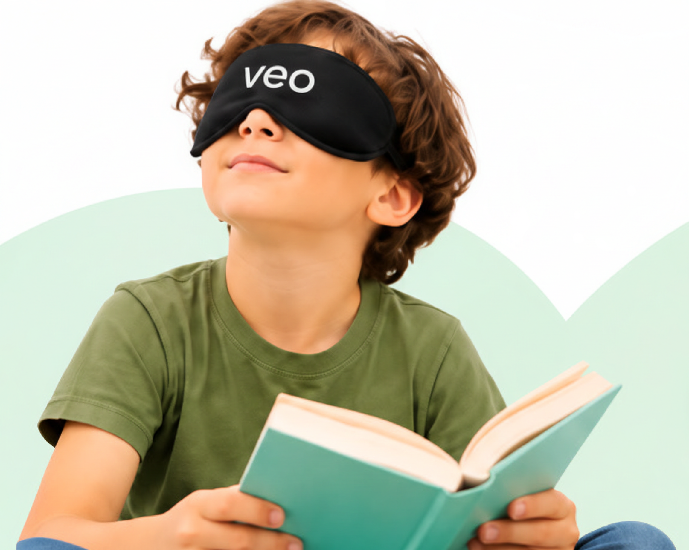
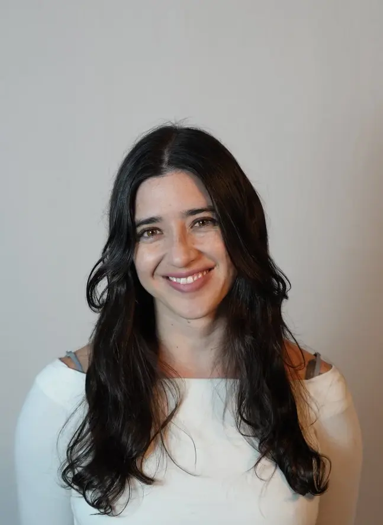

SU HISTORIA CON VEO
Patricia y Juliana
La experiencia de Juliana, contada en familia.
Cada niño es un mundo. Descubramos el suyo.

Acompañamos a tu hijo a fortalecer su mente, regular sus emociones y mejorar su conducta, explorando todo su potencial.
Agendar su evaluaciónVEO · VISIÓN EXTRA OCULAR
Esta experiencia los vuelve más conscientes.
Entienden el poder de su mente.
Generan una conexión más profunda con sus padres.
Es un proceso completo para su desarrollo cognitivo, emocional y espiritual.
Sanan y mejoran áreas específicas de su vida.
Conoceremos la historia de tu familia.
Identificaremos las necesidades de tu hijo.
Te orientaremos sobre cómo podemos ayudarlo.
Sesión de 1 hora$40 USD
Elige cómo quieres agendar tu evaluación.
Coordinamos la cita y el pago por WhatsApp.
TESTIMONIOS REALES
La experiencia de Juliana, contada en familia.
Una conversación sobre su proceso en familia.
Su experiencia, con sus propias palabras.
Cada experiencia es personal. El proceso y los avances dependen de las necesidades de cada niño.
CERCA DE TU HIJO. CERCA DE TI.

Máster en
Neuropsicología
Especialista en
Visión Extra Ocular
(VEO)
Trabajo en Psinergia con un equipo de profesionales especializados en el bienestar infantil, todos certificados en VEO.
Fui mamá joven, con una crianza tradicional y un deseo profundo de hacerlo distinto.
Entendí lo que mi hija necesita de mí y hoy la acompaño con:
CON TODA LA CONFIANZA
Aquí respondemos algunas.
Y si necesitas conversar, estamos cerca.
Visión Extra Ocular es un proceso profundo a través de ejercicios guiados los niños potencian sus capacidades internas fortaleciendo su seguridad, atención, regulación emocional. En la sesión de evaluación podrás entender y conversar sobre lo que necesita tu hijo.
Está dirigido a niños de 5 a 12 años. Cada niño tiene un ritmo, unas necesidades y un potencial diferente, por eso buscamos adaptar el acompañamiento a sus características individuales.
No necesita tener alguna dificultad. Al hacer VEO desarrolla su mente, consciencia, conexión interior. La evaluación permite conversar sobre sus necesidades.
La familia es una parte fundamental. Queremos que los padres comprendan mejor las necesidades emocionales de sus hijos y cuenten con herramientas para acompañarlos también en casa. Creemos que cuando una familia se transforma, también se transforma la infancia de sus niños.
Contamos con atención en Quito, Guayaquil, Cuenca, Ambato. La evaluación inicial con los padres puede realizarse de manera online o presencial, según disponibilidad.
La evaluación inicial tiene un valor de USD 40. Completa el formulario y continúa en WhatsApp para acordar con Nicole la disponibilidad, el día, la hora y la forma de pago.
Sí. VEO es un proceso divertido, guiado y seguro, acompañado por profesionales certificados.
Niños con Autismo, TDAH, traumas, cualquier niño que desea explorar su potencial y fortalecer diferentes áreas de su desarrollo.
Antes de comenzar, realizamos una evaluación con los padres para conocer la historia del niño, identificar sus necesidades y orientar a la familia.
SU MUNDO INTERIOR MERECE SER ESCUCHADO
Para tu hijo. Para ti. Para crecer juntos.